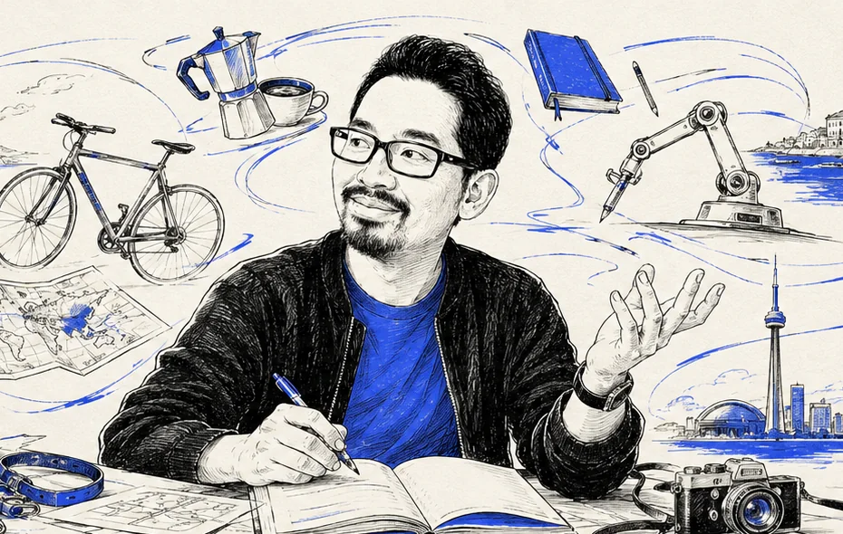
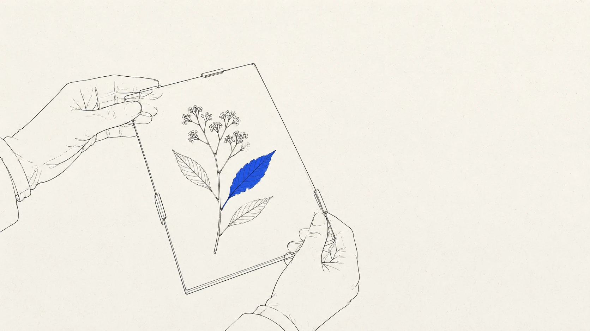
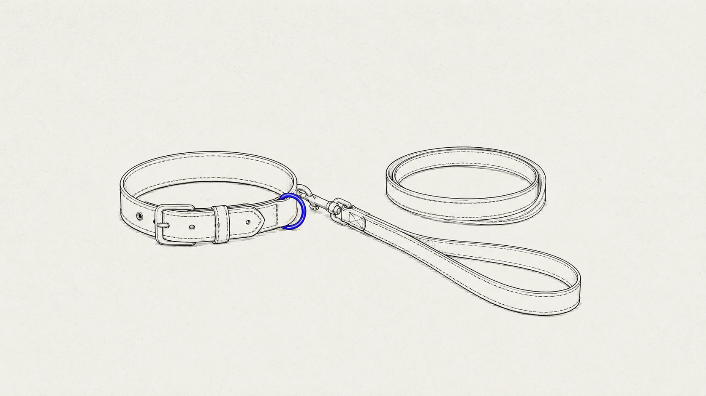
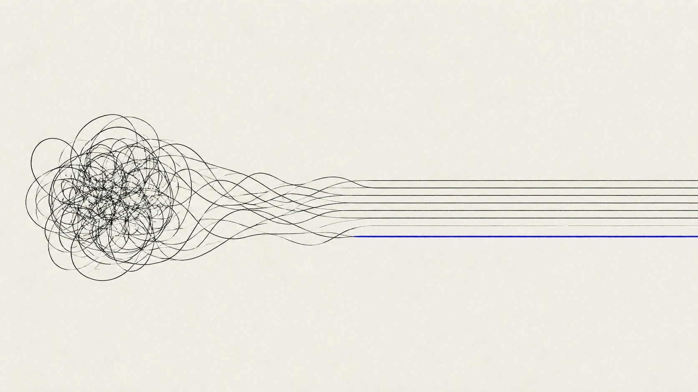

enterprise
ai-native
payments
side quests

I make complex software feel intuitive
11 years · SF ↔ Medellín · start anywhere

Enterprise · 2021–24One trade-in flow for four systems

AI-native · 2025–26A marketplace for customers who might not be human

AI-first · in progressCompas: planning that shows its consequences

Rebuilt 2015→2026Five voices in, one protected theme out

Rebuilt 2015→2026Theft recovery as an agentic workflow

Payments · 200+ countriesThe locator that answers before the tap

Regulated · 16 weeksRare-disease content, still human

Meta · with an AI pairThe site that documents its own making

Side quest · brandTail & Trot — quiet luxury for dogs

AboutI like the hard parts of product design